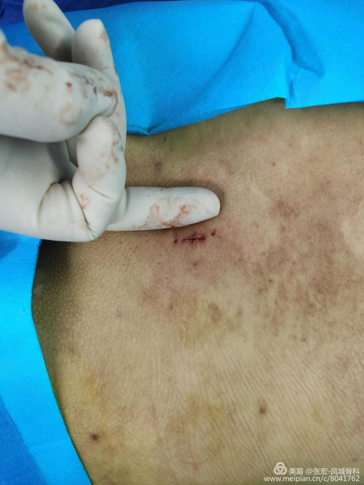

椎间孔镜手术属于骨科微创技术，行椎间孔镜手术虽没有开放手术一样的风险，但手术前也需要做好充足的准备，医生应该做好术前评估预测，患者及家属也应该做好术前的充分准备，那么椎间孔镜术前患者及家属应该如何准备呢：
（1）患者术前戒烟酒。
（2）术前1～2天训练俯卧并逐步延长俯卧时间，直至能坚持到1～2小时。医师在术前应判断患者在俯卧中是否舒适、有无呼吸障碍。如果手术在局麻下进行，这种训练更为必要。
（3）在手术前一日，应清洁全身并更换衣服。
（4）术前6小时禁饮禁食，术前半小时排尽大便、小便。
（5）估计手术时间较长者，应留置导尿管，防止术中膀胱过度充盈。
（6）术前1～2小时预防性应用抗生素，抽血标本交叉配血并备血，供术中使用。
（7）术前30分钟，按麻醉医嘱给予术前用药。
（8）对情绪过度紧张的患者术前给予适当的镇静药，如口服地西泮5mg，保证患者术前得到良好的休息。
（9）进入手术室前，取下假牙、手表、耳环等物，妥为保管；禁止化妆，以免影响术中观察病情。
（10）将病历、各种相关影像资料、术中用药等物品随患者带入手术室。
以上十点详细说明了椎间孔镜术前患者及家属需要做哪些准备，讲解详细周全，全方位的考虑到患者术前术后的身体变化，从各方面减小患者自身对手术实施的影响。为保证椎间孔镜手术顺利实施并达到满意效果，患者在行椎间孔镜手术前务必按照以上提示谨慎执行。
